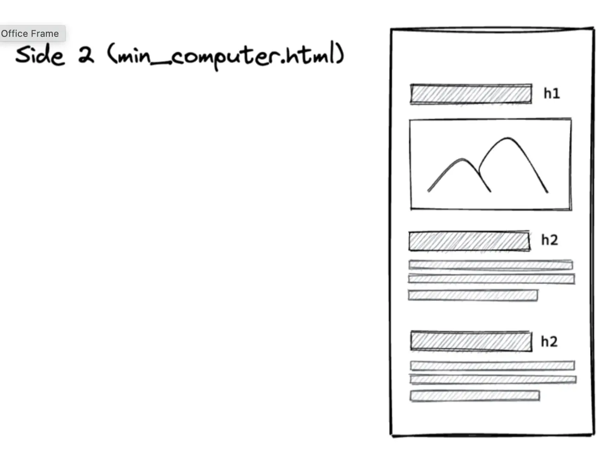
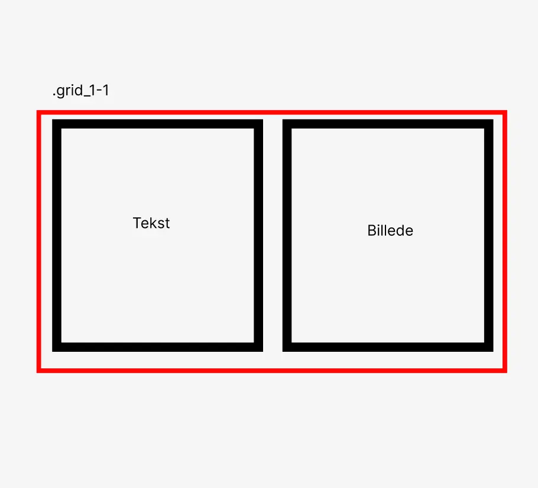

TEMA 2 - GRUNDLÆGGENDE WEB
I dette tema har jeg lavet enkle, semantiske HTML-sider og stylet dem med CSS. Hele tiden med fokus på “mobile-first” og at få lavet et responsivt design. Jeg har arbejdet med forskellige billedeformater og skabt styletiles, wireframes og prototyper i Figma.
Formål med projektet:
Formålet var at kode en færdig hjemmeside om computere, der både kunne fungere på mobil og desktop.
Process og løsning:
- Jeg startede med at opbygge den første version af sitet i mobile-first, med en grundstruktur og navigations menu udfra layoutdiagram og wireframe.
- Efter at have lavet en masse opgaver med grid strukturer, billeder og media query. Var jeg klar til at udvide siden til desktop version.
- Jeg lavede derfor desktop versionen af koderne udfra de udleverede layoutdiagram. Jeg brugte de billeder vi fik tildelt og det jeg havde lært om grid til at placere både billeder og tekst så det passede med layoutdiagrammet.




Hvad jeg lærte:
- Jeg har bla. lært hvordan man opstiller HTML, at det består af tags og attributter og at det skal nestes korrekt. Jeg har fået en god forståelse for hvordan man bruger css og dets selectorer. Og hvordan man bruger grid og flexbox i css.
- Jeg lærte også om betydning af mobile-first, og derefter at bruge media query til desktop versionen af websitet.
- I forløbet havde jeg også undervisning i de gestalte love og billeders rettigheder og betydningen af billedets format.
- Jeg lærte også om både typografi og tekstopsætning, og hvordan jeg kan hente fonte fra nettet og implementere dem i min kode.